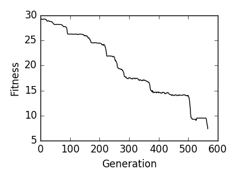

Tutorial for analyzing jobs using the DataExplorer
1 Introduction
The purpose of this is to work through some examples in using the DataExplorer to analyze optimization runs done by StructOpt. The example calculations we will be working with are held in the jobmanagerexamples folder. These jobs were submitted by the JobManager wrapper. All examples were of the optimization of a Au55 nanocluster.
2 Initialization
The initialization of the DataExplorer is done by specifying the log{time} directory where the calculation has been performed. If the directory name is known, initialization is simple. In contrast, if the user submitted the job using the JobManager, the directory which holds the log{time} directory can be used to locate a specific logfr{time} based on the order of which it was run.
from structopt.utilities.job_manager import JobManager from structopt.utilities.data_explorer.core import DataExplorer # Initialization if the logdir is known logdir = 'job_manager_examples/Au55-example/logs20170120035711' DE = DataExplorer(logdir) # Initialization through the JobManager calcdir = 'job_manager_examples/Au55-example' job = JobManager(calcdir) DE = job.get_data_explorer()
3 Analysis
The scripts below are examples of how to read data out of calculations.
3.1 Fitnesses
3.1.1 Long example
The example below shows how one reads the fitness of the most fit individual in each generation. This first script is a long example that shows the structure of the DataExplorer once it is loaded.
import numpy as np import matplotlib.pyplot as plt from structopt.utilities.job_manager import JobManager # Initialization through the JobManager calcdir = 'job_manager_examples/Au55-example' job = JobManager(calcdir) data = job.get_data_explorer() average_fitnesses = [] for population in data: population_fitnesses = [] for individual_id in population: individual = population[individual_id] population_fitnesses.append(individual.fitness) average_fitnesses.append(np.mean(population_fitnesses)) plt.figure(1, (4, 3)) plt.plot(range(len(average_fitnesses)), average_fitnesses, c='k') plt.xlabel('Generation') plt.ylabel('Fitness') plt.tight_layout() plt.savefig('images/average-fitness.png', dpi=300)

Figure 1: The evolution of the average fitness (total energy) of a Au55 nanoparticle
The DataExplorer object functions like a list of populations, so with index i returns a Population object. The Population object functions like an dictionary, where the id of each individual is each key of the Population, and the value is an Individual object. When loaded through the DataExplorer, the Individual comes preloaded with a number of properties that provide information of it.